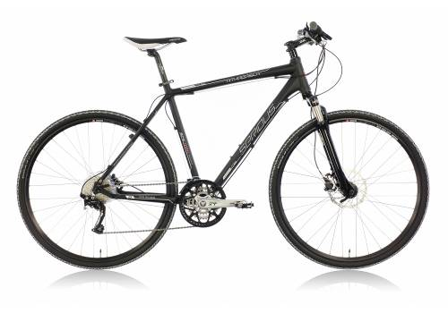

Allgemein Fahre ich grundsätzlich sehr gerne Fahrrad.
Ich denke das sieh man auch relativ gut daran, dass ich jeden Tag (bzw. meistens) mit dem Fahrrad zur Schule (ca. 12 Km) oder zur Arbeit (ca. 23 km) fahre.
Auch in meiner Freizeit gehe ich zwischendurch gerne mal ein wenig biken.
